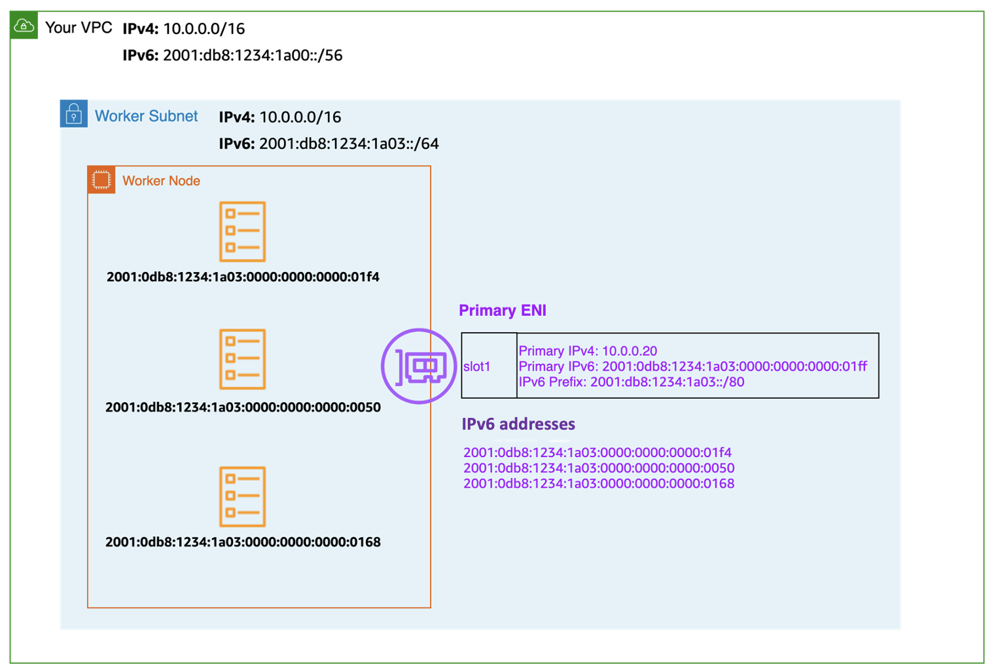
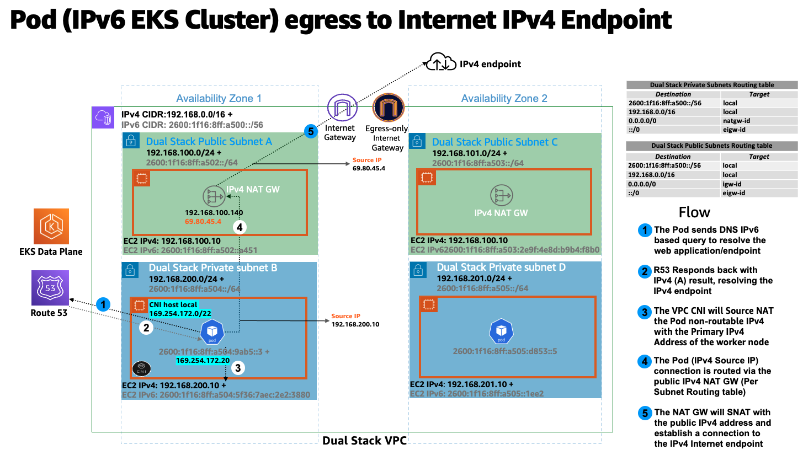

在 IPv6 上運行 EKS 叢集¶
IPv6 模式的 EKS 解決了大規模 EKS 叢集中常見的 IPv4 耗竭問題。EKS 對 IPv6 的支持集中在解決 IPv4 耗竭問題,這源於 IPv4 地址空間的有限大小。這是我們的一些客戶提出的重要問題,與 Kubernetes 的「IPv4/IPv6 雙堆疊」功能不同。 EKS/IPv6 還將提供使用 IPv6 CIDR 跨網絡邊界互連的靈活性,從而最大限度地減少 CIDR 重疊的可能性,從而解決了雙重問題(集群內部、跨集群)。 在 IPv6 模式下部署 EKS 叢集(--ip-family ipv6)是不可逆的。簡單地說,EKS IPv6 支持在整個叢集的生命週期內都是啟用的。
在 IPv6 EKS 叢集中,Pods 和 Services 將接收 IPv6 地址,同時保持與傳統 IPv4 端點的兼容性。這包括外部 IPv4 端點訪問集群內部服務,以及 Pods 訪問外部 IPv4 端點的能力。
Amazon EKS IPv6 支持利用原生 VPC IPv6 功能。每個 VPC 都被分配一個 IPv4 地址前綴(CIDR 塊大小可以從 /16 到 /28)和一個唯一的 /56 IPv6 地址前綴(固定)來自 Amazon 的 GUA(全局單播地址);您可以將 /64 地址前綴分配給 VPC 中的每個子網。IPv4 功能,如路由表、網絡訪問控制列表、對等和 DNS 解析,在啟用 IPv6 的 VPC 中的工作方式相同。然後 VPC 被稱為雙堆疊 VPC,遵循雙堆疊子網,以下圖表描述了支持 EKS/IPv6 基於叢集的 IPV4 和 IPv6 VPC 基礎架構模式:

在 IPv6 世界中,每個地址都是可路由的。默認情況下,VPC 從公共 GUA 範圍分配 IPv6 CIDR。VPC 不支持從 Unique Local Address (ULA) 範圍(fd00::/8 或 fc00::/8)分配私有 IPv6 地址,如 RFC 4193 所定義。即使您想分配自己擁有的 IPv6 CIDR 也是如此。通過在 VPC 中實現一個出口互聯網網關(EIGW),支持從私有子網到互聯網的出口流量,同時阻止所有入站流量。 以下圖表描述了 EKS/IPv6 叢集內 Pod 的 IPv6 互聯網出口流:

在 VPC 用戶指南中可以找到實施 IPv6 子網的最佳實踐。
在 IPv6 EKS 叢集中,節點和 Pods 接收公共 IPv6 地址。EKS 根據唯一本地 IPv6 單播地址(ULA)為服務分配 IPv6 地址。IPv6 叢集的 ULA 服務 CIDR 在創建叢集階段自動分配,不能指定,與 IPv4 不同。以下圖表描述了 EKS/IPv6 基於叢集的控制平面和數據平面基礎架構模式:

概述¶
EKS/IPv6 只支持前綴模式(VPC-CNI 插件 ENI IP 分配模式)。了解更多關於 Prefix Mode的信息。
前綴分配只在 Nitro 系列 EC2 實例上工作,因此 EKS/IPv6 只在叢集數據平面使用 EC2 Nitro 系列實例時才受支持。
簡單地說,一個 /80 的 IPv6 前綴(每個 worker 節點)將產生約 10^14 個 IPv6 地址,限制因素將不再是 IP,而是 Pod 密度(資源方面)。
IPv6 前綴分配只發生在 EKS worker 節點引導時。 這種行為被認為可以緩解 EKS/IPv4 叢集中 Pod 高流失率導致的 Pod 調度延遲,因為 VPC CNI 插件(ipamd)為及時分配私有 IPv4 地址而產生的節流 API 調用。它還被認為可以使 VPC-CNI 插件高級調整參數 WARM_IP/ENI, MINIMUM_IP不再必要。
以下圖表放大了 IPv6 worker 節點的彈性網絡接口(ENI):

每個 EKS worker 節點都被分配 IPv4 和 IPv6 地址,以及相應的 DNS 條目。對於給定的 worker 節點,只消耗雙堆疊子網中的單個 IPv4 地址。EKS 對 IPv6 的支持使您能夠通過一種高度固執的出口 IPv4 模型與 IPv4 端點(AWS、內部部署、互聯網)進行通信。EKS 實現了一個主機本地 CNI 插件,次於 VPC CNI 插件,為 Pod 分配和配置 IPv4 地址。CNI 插件從 169.254.172.0/22 範圍為 Pod 配置一個主機特定的非可路由 IPv4 地址。分配給 Pod 的 IPv4 地址唯一於工作節點,並且不會在工作節點之外宣告。169.254.172.0/22 最多可提供 1024 個唯一的 IPv4 地址,可支持大型實例類型。
以下圖表描述了 IPv6 Pod 連接到集群邊界外的 IPv4 端點(非互聯網)的流程:

在上圖中,Pods 將對端點執行 DNS 查找,收到 IPv4 "A" 響應後,Pod 的節點唯一 IPv4 地址將通過源網絡地址轉換(SNAT)轉換為附加到 EC2 worker 節點的主網絡接口的私有 IPv4(VPC)地址。
EKS/IPv6 Pods 還需要通過公共 IPv4 地址連接到互聯網上的 IPv4 端點,為此存在類似的流程。 以下圖表描述了 IPv6 Pod 連接到集群邊界外的 IPv4 端點(可路由互聯網)的流程:

在上圖中,Pods 將對端點執行 DNS 查找,收到 IPv4 "A" 響應後,Pod 的節點唯一 IPv4 地址將通過源網絡地址轉換(SNAT)轉換為附加到 EC2 worker 節點的私有 IPv4(VPC)地址。Pod IPv4 地址(源 IPv4:EC2 主 IP)然後路由到 IPv4 NAT 網關,其中 EC2 主 IP 被轉換(SNAT)為有效的可路由互聯網 IPv4 公共 IP 地址(NAT 網關分配的公共 IP)。
任何跨節點的 Pod 到 Pod 通信都使用 IPv6 地址。VPC CNI 配置 iptables 來處理 IPv6,同時阻止任何 IPv4 連接。
Kubernetes 服務將只接收來自唯一 本地 IPv6 單播地址(ULA) 的 IPv6 地址(ClusterIP)。IPv6 叢集的 ULA 服務 CIDR 在 EKS 叢集創建階段自動分配,不能修改。以下圖表描述了 Pod 到 Kubernetes 服務的流程:

服務通過 AWS 負載均衡器暴露到互聯網。負載均衡器接收公共 IPv4 和 IPv6 地址,即雙堆疊負載均衡器。對於訪問 IPv6 叢集 Kubernetes 服務的 IPv4 客戶端,負載均衡器會進行 IPv4 到 IPv6 的轉換。
Amazon EKS 建議在私有子網中運行 worker 節點和 Pods。您可以在公共子網中創建公共負載均衡器,將流量負載均衡到位於私有子網中的節點上的 Pods。 以下圖表描述了 IPv4 互聯網用戶訪問 EKS/IPv6 Ingress 服務的流程:

注意:上述模式需要部署最新版本的 AWS 負載均衡器控制器
EKS 控制平面 <-> 數據平面通信¶
EKS 將在雙堆疊模式(IPv4/IPv6)下配置跨帳戶 ENI(X-ENI)。Kubernetes 節點組件如 kubelet 和 kube-proxy 被配置為支持雙堆疊。Kubelet 和 kube-proxy 在 hostNetwork 模式下運行,綁定到節點主網絡接口附加的 IPv4 和 IPv6 地址。Kubernetes api-server 通過 X-ENI 與 Pods 和節點組件通信,這是基於 IPv6 的。Pods 通過 X-ENI 與 api-server 通信,Pod 到 api-server 的通信始終使用 IPv6 模式。

建議¶
保持對 IPv4 EKS API 的訪問¶
EKS API 只能通過 IPv4 訪問。這也包括集群 API 端點。您將無法從 IPv6 僅網絡訪問集群端點和 API。您的網絡需要(1)支持 NAT64/DNS64 等 IPv6 過渡機制,以實現 IPv6 和 IPv4 主機之間的通信,以及(2)支持 IPv4 端點的 DNS 服務翻譯。
基於計算資源進行調度¶
單個 IPv6 前綴就足以在單個節點上運行許多 Pods。這也有效地消除了 ENI 和 IP 對節點上最大 Pods 數量的限制。儘管 IPv6 消除了對最大 Pods 的直接依賴,但在使用較小實例類型(如 m5.large)的前綴附加時,您很可能會在耗盡 IP 地址之前耗盡實例的 CPU 和內存資源。如果您使用自管理節點組或帶有自定義 AMI ID 的托管節點組,您必須手動設置 EKS 推薦的最大 Pod 值。
您可以使用以下公式來確定在 IPv6 EKS 叢集上可以部署在節點上的最大 Pods 數量。
-
((實例類型的網絡接口數量(每個網絡接口的前綴數-1)* 16) + 2
-
((3 ENIs)((10 個次要 IP 每個 ENI-1) 16)) + 2 = 460 (實際)
托管節點組會自動為您計算最大 Pods 數量。避免更改 EKS 推薦的最大 Pods 數值,以避免由於資源限制導致的 Pod 調度失敗。
評估現有自定義網絡的目的¶
如果自定義網絡當前已啟用,Amazon EKS 建議重新評估您在 IPv6 下是否仍需要它。如果您選擇使用自定義網絡來解決 IPv4 耗竭問題,那麼在 IPv6 下就不再需要了。如果您正在利用自定義網絡來滿足安全要求,例如為節點和 Pods 設置單獨的網絡,您可以提交一個 EKS 路線圖請求。
EKS/IPv6 叢集中的 Fargate Pods¶
EKS 支持在 Fargate 上運行的 Pods 使用 IPv6。在 Fargate 上運行的 Pods 將使用從 VPC CIDR 範圍(IPv4 和 IPv6)中分配的 IPv6 和 VPC 可路由私有 IPv4 地址。簡單地說,您的 EKS/Fargate Pods 叢集範圍密度將受到可用 IPv4 和 IPv6 地址的限制。建議您根據未來的增長情況調整雙堆疊子網/VPC CIDR。如果底層子網沒有可用的 IPv4 地址,無論 IPv6 地址是否可用,您都無法調度新的 Fargate Pods。
部署 AWS 負載均衡器控制器(LBC)¶
上游內置 Kubernetes 服務控制器不支持 IPv6。我們建議使用最新版本的 AWS 負載均衡器控制器插件。LBC 將只在使用以下註釋的相應 Kubernetes 服務/Ingress 定義時部署雙堆疊 NLB 或雙堆疊 ALB:"alb.ingress.kubernetes.io/ip-address-type: dualstack" 和 "alb.ingress.kubernetes.io/target-type: ip"
AWS Network Load Balancer 不支持雙堆疊 UDP 協議地址類型。如果您對低延遲、實時流媒體、在線遊戲和物聯網有強烈要求,我們建議運行 IPv4 叢集。要了解如何管理 UDP 服務的健康檢查,請參考"如何將 UDP 流量路由到 Kubernetes"。